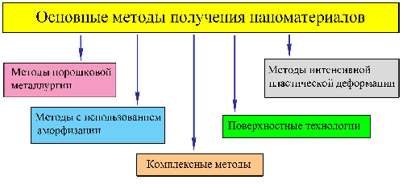

Чаще всего наноинженерия (англ. nanoengineering) представляется авторами как научно-практическая деятельность человека по конструированию, изготовлению и применению наноразмерных объектов или структур, а также объектов или структур, созданных методами нанотехнологий. В настоящее время термин «наноинженерия» широко применяется в научной и популярной литературе в связи со значительной общностью и специфичностью рассматривающихся в нем различных направлений практической деятельности человека. Наноинженерия поверхностей – это конструирование, изготовление нанообъектов только на рабочей поверхности любого изделия, т.е. формирование на поверхности так называемых полифункциональных наноструктурированных покрытий, позволяющих принципиально улучшать эксплуатационные свойства, надежность и безопасность всего изделия. Наноинженерия поверхностей объективно является наиболее востребованной в современном машиностроении нанотехнологией, представляя по своей сути наиболее доступный, достаточно простой, универсальный метод получения перспективных наноматериалов. На практике различают следующие типы наноматериалов: - нанопористые структуры;
- наночастицы;
- нанотрубки и нановолокна;
- нанодисперсии (коллоиды);
- наноструктурированные поверхности и пленки;
- нанокристаллы и нанокластеры.
Основные методы получения наноматериалов представлены на следующем рисунке.

Вещественный состав серпентинитов разных месторождений(табл. 1)